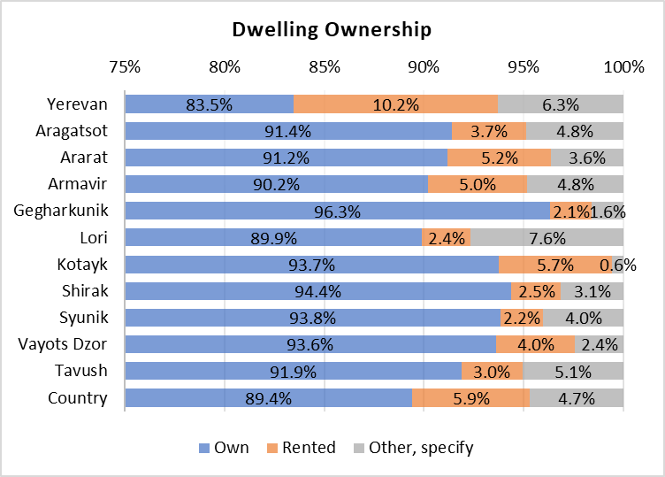

Household Assets and Fuelwood Use
Household assets
Homes are perhaps the most important asset owned by households. In 2022, most of the 800,604 Armenian households owned their dwelling (about 89.4%), as shown in Figure 1, with only about 5.9% of homes renting and 4.7% with other forms of tenure (ARMSTAT, 2023). Also, about 97% of households lived in houses or apartments, as opposed to hostel; railcar / container; other temporary lodging; or “other” (3% combined). Houses averaged 112.0 m2, while apartments averaged 68.3 m2. As expected, 96.2% of apartments were located in urban areas, with about half of them in Yerevan (55.3%). Houses, on the other hand, were located mostly in rural areas (65.8%), with about 13.4% of them located in Yerevan.
Figure 1. Dwelling ownership by Marz

Source: Integrated Living Conditions Survey, 2022 (ARMSTAT, 2023).
The rental market is small and an urban phenomenon, with 92% of rentals occurring in that area. The average rent for a house was AMD 56,613.6 (about USD 143.1) with an average price of AMD 882.4 (USD 2.23) per square meter. Conversely, apartments were rented at a more expensive mean of AMD 82,124.2 (USD 207.6) with an average price of AMD 1,447.8 (USD 3.7) per square meter.
Owned dwellings are an asset from which households derive welfare. Non renters derived an average of AMD 54,338.1 (USD 137.33) in monthly imputed rent. The emergent rental market information was used to impute rent to non-renters using a log linear modeling approach described by Ceriani et al. (2019), in which imputed rent was predicted using a combination of household characteristics (urban/rural, Marz, number of rooms, presence of an indoor toilet, number of household, square meters, type of dwelling, members) and head of household characteristics (sex, highest completed schooling level, age group). These values are shown in Table 1 by decile and for the whole country. Net present value of that monthly imputed rent (for a 2050 horizon) was also estimated at AMD 17.3 million (USD 43,881.5), using a 5% annual discount rate and a 5% average inflation rate.
Table 1. Imputed rent and average net present value (2050 horizon) for non-renters
| Decile | Average dwelling area (m2) | Average imputed rent (Dram per month) | Average net present value of rent (2050 horizon) |
|---|---|---|---|
| 1 | 89.4 | 45,632.3 | 14,565,638.7 |
| 2 | 91.1 | 51,149.9 | 16,326,813.0 |
| 3 | 91.1 | 52,635.7 | 16,801,095.0 |
| 4 | 89.5 | 55,010.5 | 17,559,108.4 |
| 5 | 88.3 | 53,896.9 | 17,203,666.3 |
| 6 | 87.2 | 54,230.5 | 17,310,143.3 |
| 7 | 93.0 | 54,532.6 | 17,406,560.2 |
| 8 | 89.1 | 52,558.3 | 16,776,366.9 |
| 9 | 86.7 | 56,791.0 | 18,127,439.9 |
| 10 | 87.5 | 59,735.1 | 19,067,188.6 |
| Country | 89.0 | 54,338.1 | 17,344,482.6 |
Source: author based on log linear imputed rent approach (Ceriani et al., 2019)
A little over a third (288,718 or 36.1%) of households owned a car in 2022 and used it in the month prior to the survey. However, a higher percentage of homes in rural areas (47.5%) own a vehicle. Given the characteristics of rural areas and the availability of public transportation, it is a particularly important asset for household mobility. This also means that these households are exposed to energy transition risks derived from changes to prices of fuels and technological changes in car technologies (TNFD, 2023).
Armenians access water mainly through centralized water supply (95.6% or 765,728 households), 2.7% of households have their own system of water supply, and the remaining 1.6% access water through spring water or well; delivered water; bought water; or “other”. Urban households spend an average of about AMD 2,506.5 (USD 6.3) on water, while rural households spend about AMD 1,790.1 (USD 4.5).
Most homes (99.8% or 798,835 households) access electricity through the national grid, with only a small share 0.2% using solar panels. Both urban and rural homes spend about the same average expenditure on electricity of about AMD 7,948.3 (USD 20.1).
Household exposure to the agricultural sector
About a fourth of all Armenian households (23.4%) had a monthly agricultural income component; a number that rises to 61% when discussing rural households, with that income representing an average 22.6% of total income. Overall, 91.3% of those 187,176 households that derived an agricultural income were located in rural areas. This income averaged AMD 72,275.2 (USD 182.67) and represented an average of 23.7% of total income for rural homes. These same figures averaged AMD 47,853.1 (USD 120.94) and 12.0% in urban areas, respectively. When it comes to deciles, perhaps unintuitively, the average share of total income that comes from agriculture rises from 20.7% for the first decile to 26.3% for the tenth, as shown in Table 2.
Table 2. Average agricultural income
| Decile | Average total income |
Average agricultural Income |
Average agricultural income share of total income |
|---|---|---|---|
| 1 | 272,739.6 | 54,013.3 | 20.7% |
| 2 | 277,204.7 | 47,470.2 | 19.3% |
| 3 | 308,608.9 | 75,184.5 | 22.0% |
| 4 | 280,508.0 | 51,349.7 | 18.3% |
| 5 | 306,497.2 | 68,414.4 | 24.0% |
| 6 | 301,499.4 | 69,378.7 | 22.8% |
| 7 | 315,422.2 | 72,267.4 | 21.5% |
| 8 | 337,909.6 | 78,487.8 | 25.5% |
| 9 | 295,644.2 | 78,357.8 | 23.5% |
| 10 | 315,725.2 | 92,134.7 | 26.3% |
| Country | 303,234.5 | 70,156.4 | 22.6% |
Source: author based on Integrated Living Conditions Survey, 2022 (ARMSTAT, 2023).
Note: column three is the average of the share calculated at the household level and weighted by population weights, not column two divided by column one.
While only 23.4% of households, derive income from the agricultural sector, exposure to agriculture is larger, since 41% of households use land for agricultural purposes (owned and/or rented). A total of 98% out of the 328,438 households that use agricultural land own their plots, and 5.3% of those (also) rented. The average area used by households for agricultural purposes is 7,329.9 m2, of which an average 70.6%, or 5,551.2 m2, is used for crops. This suggests that own consumption of agricultural output plays a role in Armenian incomes. Table 3 shows that for households without agricultural sales, 4.3% of income can be attributed to imputed use of agricultural products for own consumption. More generally, this table shows the shares of household income from different sources, for households with agricultural land, with or without deriving income from that land, compared with households without agricultural land. It is evident that public pensions and benefits plays a much bigger role (29.7%) for all households, along with hired employment (41.3%).
Table 3. Average shares of sources of income for households with and without agricultural land
| Households with agricultural land (owned or not) with agricultural income | Households with agricultural land (owned or not) with no agricultural income | Households without agricultural land (owned or not) with or without agricultural income | All households | |
|---|---|---|---|---|
| Number of households | 184,738 | 143,700 | 472,166 | 800,604 |
| Average total income (Dram) | 302,290.3 | 223,874.8 | 247,434.9 | 255,863.9 |
| Average share of income coming from: | ||||
| Sale of agricultural products | 22.8% | 0.0% | 0.1% | 5.3% |
| Imputed use of agricultural products for own consumption | 8.7% | 4.3% | 0.6% | 3.2% |
| Hired employment | 28.5% | 40.5% | 46.6% | 41.3% |
| Self-employment | 10.2% | 9.2% | 8.0% | 8.7% |
| Property (rent, interest, equity gain) | 0.1% | 0.1% | 0.2% | 0.2% |
| Public pensions and benefits | 22.2% | 33.8% | 31.5% | 29.7% |
| Transfers | 7.2% | 10.5% | 11.6% | 10.4% |
| Other | 0.7% | 1.3% | 1.4% | 1.2% |
| All income shares | 100% | 100% | 100% | 100% |
Source: author based on Integrated Living Conditions Survey, 2022 (ARMSTAT, 2023).
Household reliance on firewood for heating
Expenditure elasticities for fuelwood
Most homes in Armenia use natural gas for heating (61.9% or 495,203 households), but an important 23.8% (190,884 households) use wood for heating, followed by 21.7% that use electricity and 8.2% pressed dung. Negligible percentages of households use liquefied gas or coal (0.2% and 0.9% respectively). In rural areas, 51.5% of rural homes (143,724 households) use wood for heating, which correlates with the 54.8% of rural households that have a self-made heater as main technology. Not only is wood used as heating source, but it is also used as an “energy carrier” (mainly cooking) by 11.3% of all households. In rural areas, 25.8% of homes use it for this purpose.
While there is a market for fuelwood, many homes do not pay for fuelwood annually. Figure 2 shows the distribution for this concept, showing a clear component of households paying zero Dram for their fuelwood consumption annually. This is possibly related to those households that collect wood for free. However, as shown in Table 4, homes that do pay for fuelwood spend an average of AMD 128,209.2 (about USD 317.8) annually, which is roughly 5.5% of total annual expenditure for the average household.
Figure 2. Annual wood expenditure distribution

Source: Integrated Living Conditions Survey, 2022 (ARMSTAT, 2023).
Table 4. Average fuelwood expenditure and quantity used annually and in the month prior to the survey
| Area | Average monthly household total expenditure (Dram) | Average monthly household energy expenditure (Dram) | Fuelwood expenditure in month prior to survey (Dram) | Fuelwood quantity used in month prior to survey (m3) | Fuelwood expenditure annually (Dram) |
Fuelwood quantity used annually (m3) |
|---|---|---|---|---|---|---|
| URBAN | 187,752.5 | 12,700.4 | 2,510.2 | 0.6 | 116,428.6 | 6.4 |
| RURAL | 201,881.6 | 15,652.8 | 1,821.9 | 0.6 | 131,653.5 | 6.8 |
| Country | 192,673.8 | 13,728.7 | 1,977.6 | 0.6 | 128,209.2 | 6.7 |
Source: author based on Integrated Living Conditions Survey, 2022 (ARMSTAT, 2023).
However, an expenditure elasticity of annual wood expenditure across income deciles1 (when moving from decile to decile) points to a complex relationship between income and fuelwood expenditure. The higher elasticities in the middle deciles might reflect an increased ability and desire to spend on fuelwood, possibly for heating during colder months. The negative figures in the higher deciles could suggest a shift towards more modern heating solutions, or that beyond a certain income level, the relative importance of fuelwood decreases. The variations between deciles underscore the diverse factors influencing energy choices, including affordability, accessibility, and preferences. (see Table 5). The higher expenditure elasticity for fuelwood in decile 5 could be indicative of larger household sizes or larger homes that require more wood for heating and cooking. This would naturally lead to a higher quantity of fuelwood being used, which would increase expenditure on fuelwood without necessarily implying luxury consumption that theory would suggest with high elasticities.
This interpretation would be consistent with a scenario where these households, perhaps due to their size or location, have not yet transitioned to other energy sources, which are often more accessible in urban settings or to wealthier households that can afford the initial investment in more modern heating systems. This considers the socio-economic context that might prevent a switch to alternative fuels, even when households have slightly more income. Issues such as availability of infrastructure, initial costs of switching to gas or electric heating, and cultural preferences for wood.
In rural areas for example, the availability of fuelwood and the lack of infrastructure for alternative energy sources can lead to a situation where households spend more on wood simply because it’s one of the few options available to them, and not because they particularly prefer wood over other fuels. Indeed, when conducting this analysis across urban to rural, the elasticity value reaches 3.25 (growth of wood expenditure is three times the growth of total consumption across urban/rural), confirming that living in rural areas might be a big determinant of fuelwood use, simply because it’s the technology to which those homes have access and other infrastructure is lacking.
Table 5. Expenditure elasticity of annual wood expenditure across deciles
| Decile | Elasticity of Annual Wood Expenditure |
|---|---|
| 1 | - |
| 2 | 0.5 |
| 3 | 0.2 |
| 4 | 1.6 |
| 5 | 3.3 |
| 6 | 2.1 |
| 7 | -0.3 |
| 8 | 0.4 |
| 9 | -0.1 |
| 10 | -0.2 |
Source: author based on Integrated Living Conditions Survey, 2022 (ARMSTAT, 2023).
For comparison, the expenditure elasticity of natural gas expenditure (which has a more traditionally priced market) across income deciles suggest that natural gas is not consistently treated as a normal or inferior good across the income spectrum. The negative elasticities in higher deciles may indicate a trend of higher-income households either becoming more energy-efficient, having better-insulated homes, or switching to alternative fuels that are perceived as cleaner or more convenient. This might be consistent with the higher percentage of urban homes that use electricity for cooking and heating. The very high negative elasticity in decile 9 is particularly notable and could warrant a closer investigation to understand the underlying causes.
Table 6. Expenditure elasticity of natural gas expenditure across deciles
| Decile | Elasticity |
|---|---|
| 1 | - |
| 2 | 0.62 |
| 3 | 0.10 |
| 4 | -0.88 |
| 5 | -0.44 |
| 6 | 0.22 |
| 7 | -0.29 |
| 8 | -0.48 |
| 9 | -6.59 |
| 10 | -0.55 |
Source: author based on Integrated Living Conditions Survey, 2022 (ARMSTAT, 2023).
When comparing pressed dung, the elasticity behavior shows a component that responds much more to income levels. Table 7 shows the household expenditure elasticity of press dung expenditure across deciles, suggesting big leaps to lower levels of expenditure on pressed dung as households move from decile to decile, especially moving from decile 3 to 4, from decile 5 to 6 and then from 6 to 7.
Table 7. Expenditure elasticity of pressed dung expenditure across deciles
| Decile | Elasticity of Pressed Dung Expenditure |
|---|---|
| 1 | 0.00 |
| 2 | 0.43 |
| 3 | -0.56 |
| 4 | -6.41 |
| 5 | -3.35 |
| 6 | -25.71 |
| 7 | -12.18 |
| 8 | 1.02 |
| 9 | 0.48 |
| 10 | -4.81 |
Source: author based on Integrated Living Conditions Survey, 2022 (ARMSTAT, 2023).
Determinants of fuelwood consumption
There are various factors that influence fuelwood consumption by households. While income is important, it’s not the only determinant, and there are other factors, which include affordability and availability of fuels, scarcity of fuelwood supply, fuel preferences, and cost and performance of end-use equipment. Moreover, all these factors also on whether the household is in an urban or rural setting (Lefevre et al., 1997).
To better understand this, a linear model was conducted on household data for Armenia (to explain annual wood quantity used by household as determined by Marz, urban/rural, total household income, dwelling size in square meters, hectares of forests per thousand inhabitants by Marz2 (see Table 8), average price of natural gas in Marz and area (urban/rural), computed as the average of the division of total spent on natural gas by amount of natural gas used by households in that Marz and area (urban/rural); and average electricity bill in that Marz and Area.
The explanatory power of the model is moderate3 (Adjusted R-squared: 0.2668), but the results are interesting as shown in Table 9. The baseline level of annual wood consumption is high (with an intercept 26.51 cubic meters of wood). The effect of administrative division is small and statistically insignificant (ADM1 administrative division -0.0271). The effect of being in a rural area, compared to an urban area, is not significant. Results indicate that for each unit increase in total income, wood consumption increases by approximately 0.0000029 cubic meters per year. This effect is highly significant (p < 2.26e-16), suggesting a positive relationship between income and wood consumption, which is counterintuitive. More in line with expectations is dwelling size, which is also highly significant, suggesting that higher dwelling sizes lead to higher fuelwood use. The number of hectares of forest by thousand inhabitants is a significant predictor. The coefficient indicates that more forest availability leads to higher wood consumption. Both the price of natural gas and average expenditure on electricity in Marz and area are non-significant.
Table 8. Hectares of forest per thousand inhabitants
| Marz | Forested areas (Ha) | Not Forested areas (Ha) | Total area (Ha) | Population 2020 (thousand inhabitants) | Hectares of forest per thousand inhabitants |
|---|---|---|---|---|---|
| Yerevan | - | 23,246.8 | 23,246.8 | 1,084.0 | - |
| Aragatsotn | 1,948.2 | 270,744.9 | 272,693.1 | 26.8 | 72.7 |
| Ararat | 3,417.5 | 207,130.8 | 210,548.3 | 72.1 | 47.4 |
| Armavir | 196.5 | 125,429.7 | 125,626.2 | 82.4 | 2.4 |
| Gegharkunik | 13,525.9 | 383,155.5 | 396,681.4 | 66.6 | 203.1 |
| Lori | 81,492.8 | 293,208.2 | 374,701.0 | 126.1 | 646.3 |
| Kotayk | 11,571.6 | 199,289.4 | 210,861.0 | 136.8 | 84.6 |
| Shirak | 882.2 | 269,527.6 | 270,409.8 | 135.6 | 6.5 |
| Syunik | 44,390.9 | 402,134.9 | 446,525.9 | 93.2 | 476.3 |
| Vayots Dzor | 2,500.0 | 226,086.5 | 228,586.5 | 17.1 | 146.2 |
| Tavush | 121,962.8 | 149,079.3 | 271,042.2 | 93.2 | 1,308.6 |
Source: author land use land cover information from ESA CCI Land Cover time-series v.2.0.7, 1992-2020 (ESA, 2023) and population data (ARMSTAT, 2020).
Table 9. Regression results on the determinants of fuelwood use
| Min | 1Q | Median | 3Q | Max | |
|---|---|---|---|---|---|
| Residuals: | -13.625 | -1.716 | -0.501 | 1.35 | 13.445 |
| Coefficients: | Estimate | Std. Error | t value | Pr(>|t|) | Signif. |
|---|---|---|---|---|---|
| (Intercept) | 6.19E+00 | 1.58E+01 | 0.391 | 0.696 | |
| ADM1 administrative divisions | -2.71E-02 | 3.33E-02 | -0.815 | 0.415 | |
| Urban/Rural | 7.22E-02 | 2.02E-01 | 0.358 | 0.72 | |
| Dwelling size (m2) | 2.08E-02 | 2.22E-03 | 9.4 | < 2e-16 | *** |
| Total income (Dram) | 2.22E-06 | 3.14E-07 | 7.081 | 2.26E-12 | *** |
| Ha. of forest / 1000 inhabitants | 3.28E-03 | 3.23E-04 | 10.145 | < 2e-16 | *** |
| Avg. price of natural gas (Dram/m3) | -2.47E-02 | 1.14E-01 | -0.217 | 0.828 | |
| Avg. electricity expenditure (Dram) | -2.88E-06 | 9.76E-05 | -0.03 | 0.976 |
Significance codes: 0 ‘***’ 0.001 ‘**’ 0.01 ‘*’ 0.05 ‘.’ 0.1 ’ ’ 1
Residual standard error: 2.808 on 1392 degrees of freedom (3784 observations deleted due to missingness)
Multiple R-squared: 0.2704, Adjusted R-squared: 0.2668.
F-statistic: 73.71 on 7 and 1392 DF, p-value: < 2.2e-16.
Overall, it can be concluded that there is an income effect that is counter intuitive. Higher income is associated with increased wood consumption. Wealthier households probably consume more wood due to larger homes as captured in the effect of dwelling size, and a strong cultural preference for wood as a fuel source with probably limited alternatives due to infrastructure or other reasons. Forest availability is also a strong predictor, suggesting that more available forest resources lead to higher wood consumption. There’s a tendency for wood consumption to decrease as natural gas prices increase, though this is almost insignificant and general electricity expenditure does not seem to be a significant determinant of wood consumption at all.
References
ARMSTAT. (2020). Marzes of the Republic of Armenia and Yerevan city in figures, 2020.
ARMSTAT. (2023). Integrated Living Conditions Survey 2022 [dataset].
Ceriani, L., Olivieri, S., & Ranzani, M. (2019). Housing, imputed rent, and households’ welfare. Poverty & Equity Global Practice Working Papers, 213. https://documents1.worldbank.org/curated/pt/336451565194643402/pdf/Housing-Imputed-Rent-and-Households-Welfare.pdf
ESA. (2023). ESA CCI Land Cover time-series v.2.0.7 (1992-2020). European Space Agency.
Lefevre, T., Todoc, J., & Raj Timilsina, G. (1997). The Role of Wood Energy in Asia. Food and Agriculture Organization of the United Nations.
TNFD. (2023). Recommendations of the Taskforce on Nature-related Financial Disclosures. Green Finance Institute.
Footnotes
This is calculated as: Decile Expenditure Elasticity of Demand = % Change in average expenditure from decile to decile / % Change in average Fuelwood Expenditure Demanded by (expenditure) decile.↩︎
Author calculated this variable using land use land cover information from ESA CCI Land Cover time-series v.2.0.7, 1992-2020 (ESA, 2023) and population data (ARMSTAT, 2020).↩︎
Moderate but robust. The model has been probed using the Variance Inflation Factor, showing that the model does not appear to suffer from sever multicollinearity. Correlations among variables are moderate or low as well. A concern about interaction between urban/rural and dwelling size, which removed the slight significance of a previous model without dwelling size was ruled out, testing a model with the interaction of these variables, which was not significant.↩︎